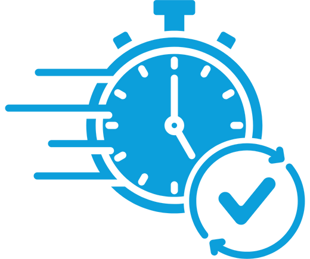
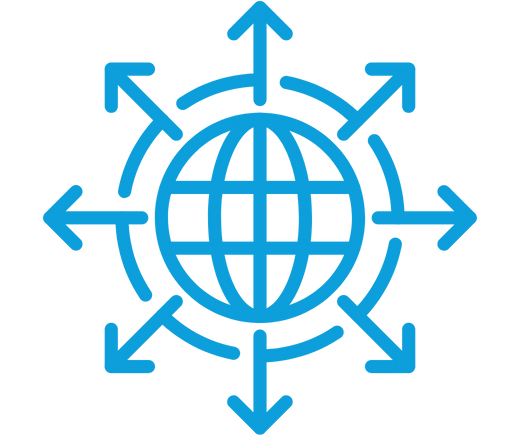
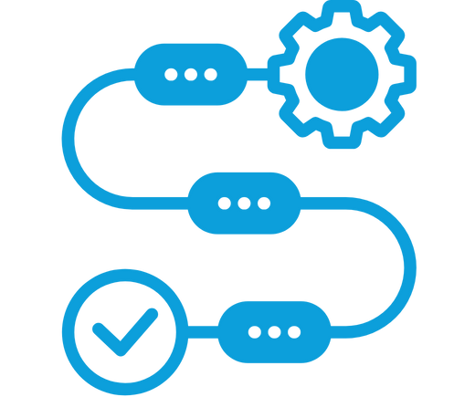

Contact Us
Book a working session with the Diya team
Embedded across workflows. Governed for clinical use. Designed to scale across sites

Across hospitals, clinics, and community settings, health systems must manage:
Growing language diversity
Interpreter shortages & delays
Inconsistent patient understanding
Increasing operational complexity
Heightening regulatory scrutiny
At the same time, language services programs are difficult to improve:
Dependent on coordination & availability
Disconnected from clinical workflows
Difficult to govern consistently across sites
Hard to scale without adding cost or risk
Diya is designed to augment existing health system language services programs



One platform. Three outcomes that matter at scale
Patients need timely access to care — and clinicians need immediate access to communication support.
Diya enables:
Zero-wait interpretation embedded in clinical workflows
Multilingual communication during visits, after discharge, & between appointments
Language access across inpatient, outpatient, emergency, & community care
Access improves when communication is available the moment care happens.
Understanding drives experience — for both patients and clinicians.
Diya supports:
Clear explanations during clinical encounters
Multilingual discharge instructions & follow-ups
Structured forms & education designed for comprehension
Secure engagement with families & caregivers
Clinicians spend less time re-explaining. Patients feel informed, respected, and confident.
Communication breakdowns create hidden costs. By embedding communication directly into workflows with a single governed platform, health systems reduce friction.
Diya helps:
Reduce visit delays & increase clinical throughput
Decrease rework & clarification calls
Minimize manual coordination across tools & vendors
Improve efficient use of staff and interpreter resources
Cost impact is driven by workflow efficiency and consolidation.

95%
4.5/5
1/3

Diya is built for the realities of health system deployment
Embedded directly into any major EHR
Centralized governance with local flexibility
Clear auditability & reporting
Healthcare data protection & AI governance

Governed by Diya Safe AI™
 U.S. health systems &
U.S. health systems &  U.K NHS Trusts
U.K NHS Trusts


Most organizations start with interpretation.
Then, expand naturally

Working session to align on fit

Defined pilot framework with success criteria
Evidence-based decisions about expansion
Book a working session with the Diya team